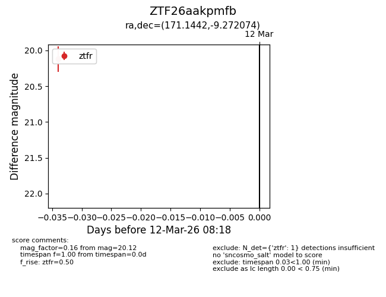
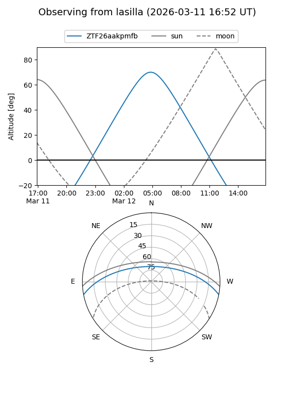
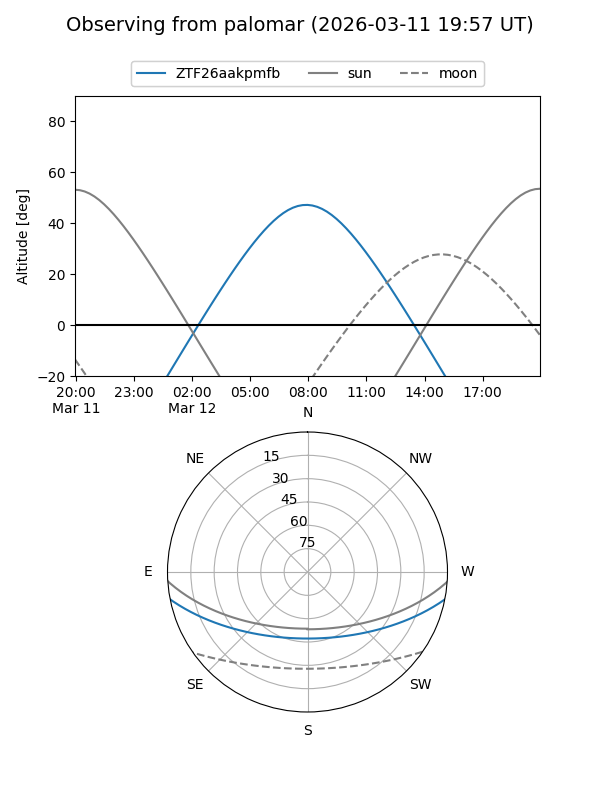

ZTF26aakpmfb
Target ZTF26aakpmfb at 2026-03-12 08:20
Aliases and brokers:
FINK: link
Lasair: link
ALeRCE: link
alt names
ZTF26aakpmfb (ztf,fink_ztf)
Coordinates:
equatorial (ra, dec) = 171.1442,-9.27207
equatorial (HMS+DMS) = 11:24:34.60,-09:16:19.47
galactic (l, b) = (269.8941,+47.94964)
Flags:
Photometry:
last ztfr=20.12
1 ztfr detections
Lightcurve

Visibility


Additional plots